Plot options control the actions of plots within the layout. These options can be applied either globally to all plots in the layout or individually to specific plots.
- To apply a plot option to a single plot, use the
+operator. - To set a plot option at the layout level, use the
-operator. Plot options set at the layout level will be inherited by all plots when rendering the layout.
Plot options inherit properties from parent layout options hierarchically.
The package currently provides three plot options, each prefixed with
plot_:
-
plot_theme: Sets the default theme for the plot. -
plot_data: Transforms the plot data. Many functions in this package require a specific data format to align observations,plot_data()helps reformat data frames as needed. -
plot_align: Defines alignment specifications for plots within the layout.
set.seed(123)
small_mat <- matrix(rnorm(81), nrow = 9)
rownames(small_mat) <- paste0("row", seq_len(nrow(small_mat)))
colnames(small_mat) <- paste0("column", seq_len(ncol(small_mat)))
plot_theme
The plot_theme() function extends theme()
to set a default theme for plots, allowing you to input
theme() elements directly or modify the theme elements.
To set a plot option for a single plot, simply use the +
operator:
ggheatmap(small_mat) +
# change the default theme of the heatmap body
plot_theme(plot.background = element_rect(fill = "red"))
#> → heatmap built with `geom_tile()`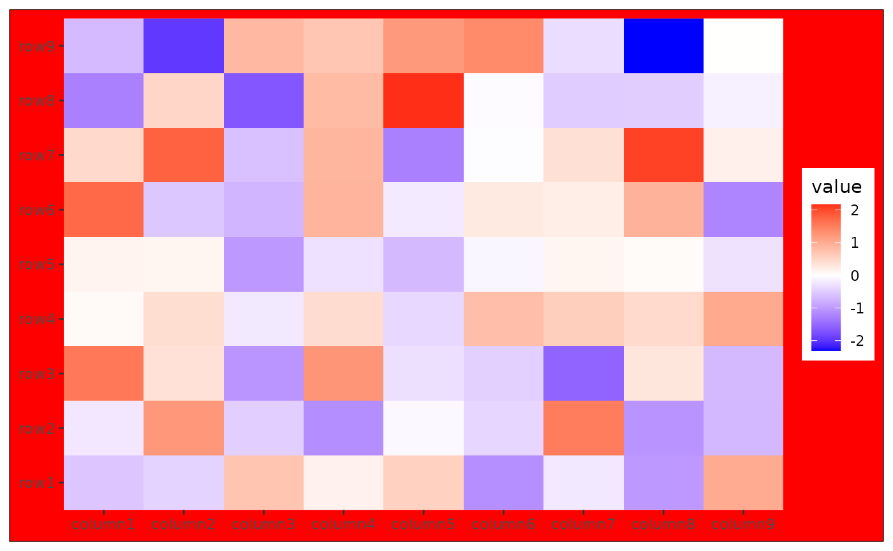
You can use a theme() object directly in
plot_theme().
ggheatmap(small_mat, filling = FALSE) +
# we reduce the heatmap body cell width and height
# in this way, we can see the background of `theme_bw()` in the panel.
geom_tile(aes(fill = value), width = 0.9, height = 0.9) +
# change the default theme of the heatmap body
plot_theme(theme_bw(), plot.background = element_rect(fill = "red"))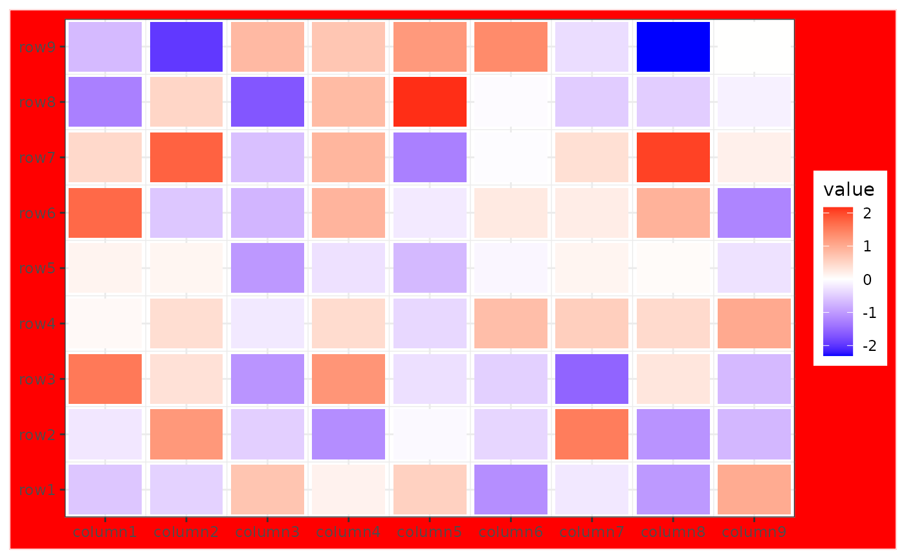
Note that plot_theme() serves as the default theme and
will always be overridden by any theme() settings applied
directly to the plot. The default theme (plot_theme()) is
applied first, followed by any specific theme() settings,
even if theme() is added before
plot_theme().
ggheatmap(small_mat) +
# change the plot theme of the heatmap body
theme(plot.background = element_rect(fill = "blue")) +
# change the default theme of the heatmap body
plot_theme(plot.background = element_rect(fill = "red"))
#> → heatmap built with `geom_tile()`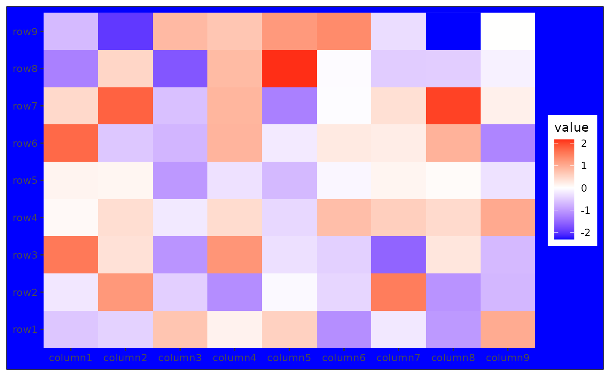
By using the - operator with plot options, we apply the
option directly to the active layout.
ggheatmap(small_mat) +
# Change the active layout to the top annotation
anno_top() +
# add a dendrogram to the top annotation
align_dendro() +
# add a bar plot to the top annotation
ggalign(aes(.names, value, fill = factor(.names)), data = rowSums) +
geom_bar(stat = "identity") -
# Change the default theme of the top annotation
# All plots in the top annotation will inherit this default theme
plot_theme(plot.background = element_rect(fill = "red"))
#> → heatmap built with `geom_tile()`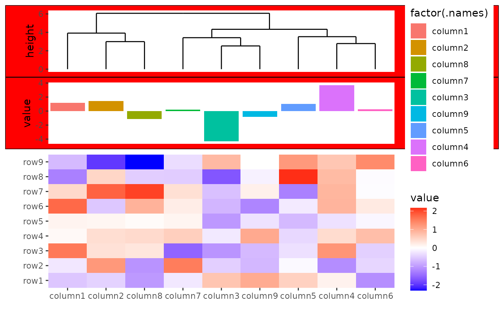
Unlike individual ggplot2 elements, which will be added directly to
each plot by - operator, layout-level
options set by - operator are
inherited by all plots in the layout when
rendered. Any plot-specific options will override these
layout-level options, regardless of the order in which they are
added.
ggheatmap(small_mat) +
# Change the active layout to the top annotation
anno_top() +
# add a dendrogram to the top annotation
align_dendro() +
# change the plot_theme for the dendrogram plot
plot_theme(plot.background = element_rect(fill = "blue")) +
# add a bar plot to the top annotation
ggalign(aes(.names, value, fill = factor(.names)), data = rowSums) +
geom_bar(stat = "identity") -
# Change the default theme of the top annotation
# All plots in the top annotation will inherit this default theme
# But the plot-specific options will override these
plot_theme(plot.background = element_rect(fill = "red"))
#> → heatmap built with `geom_tile()`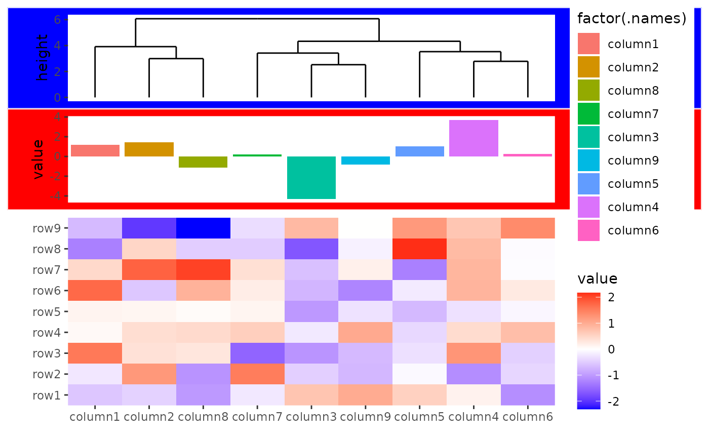
plot_data
align_gg()/ggalign() requires the specific
data format for its operations. If you need to transform or filter data
for individual geoms, you can use the data
argument within each geom. However, if you have multiple
geoms and want a consistent transformation applied across
all, you can utilize the plot_data() function. This allows
you to transform the default data for the entire plot.
The plot_data() accepts a function that takes a data
frame as input and returns a modified data frame. By default,
plot_data() will attempt to inherit from the parent layout
if the data is inherited from it. However, there is one exception:
align_dendro() will not inherit plot_data()
transformations by default.
set.seed(1234L)
ggheatmap(small_mat) +
anno_top() +
align_kmeans(3L) +
# we add a bar plot
ggalign() +
# we subest the plot data
plot_data(~ subset(.x, .panel == 1L)) +
geom_bar(aes(y = value, fill = .row_names), stat = "identity")
#> → heatmap built with `geom_tile()`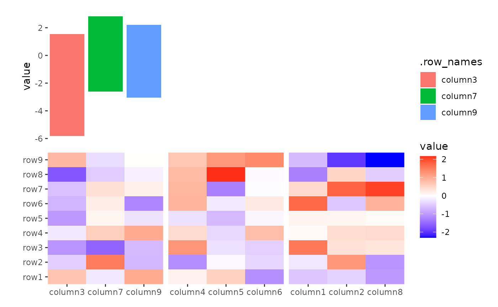
plot_align
The plot_align() function defines the align
Specifications for plots.
guides
By default, ggheatmap() will collect all guide legends
on the side from which they originate.
heatmap_collect_all_guides <- ggheatmap(small_mat, width = 2, height = 2L) +
# we set the legend to the left side
scale_fill_gradient2(
low = "blue", high = "red",
name = "I'm from heatmap body",
guide = guide_legend(position = "left")
) +
theme(axis.text.x = element_text(angle = -60, hjust = 0)) +
# we add a top annotation
anno_top() +
# in the top annotation, we add a dendrogram
align_dendro(aes(color = branch), k = 3L) +
# we set the legends of the dendrogram to the left side
scale_color_brewer(
name = "I'm from top annotation", palette = "Dark2",
guide = guide_legend(position = "left")
) +
# we add a left annotation
anno_left() +
align_dendro(aes(color = branch), k = 3L) +
# we set the legends of the dendrogram to the top side
scale_color_brewer(
name = "I'm from left annotation", palette = "Dark2",
guide = guide_legend(position = "top", direction = "vertical")
) &
# we remove all margins for all plots
theme(plot.margin = margin())
heatmap_collect_all_guides
#> → heatmap built with `geom_tile()`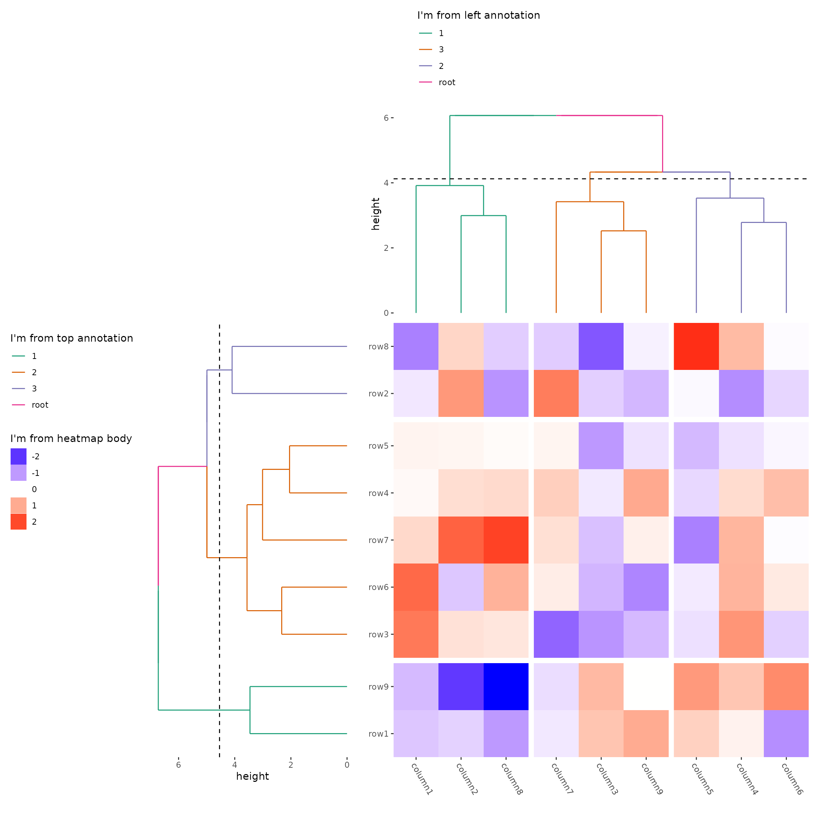
The guides argument controls which side of guide legends should be
gathered. In the following example, we’ll collect the guide legends only
on the top (t) sides:
heatmap_collect_all_guides -
# we set global `guides` argument for `the heatmap layout`
# we only collect guides in the top side
with_quad(plot_align(guides = "t"), NULL)
#> → heatmap built with `geom_tile()`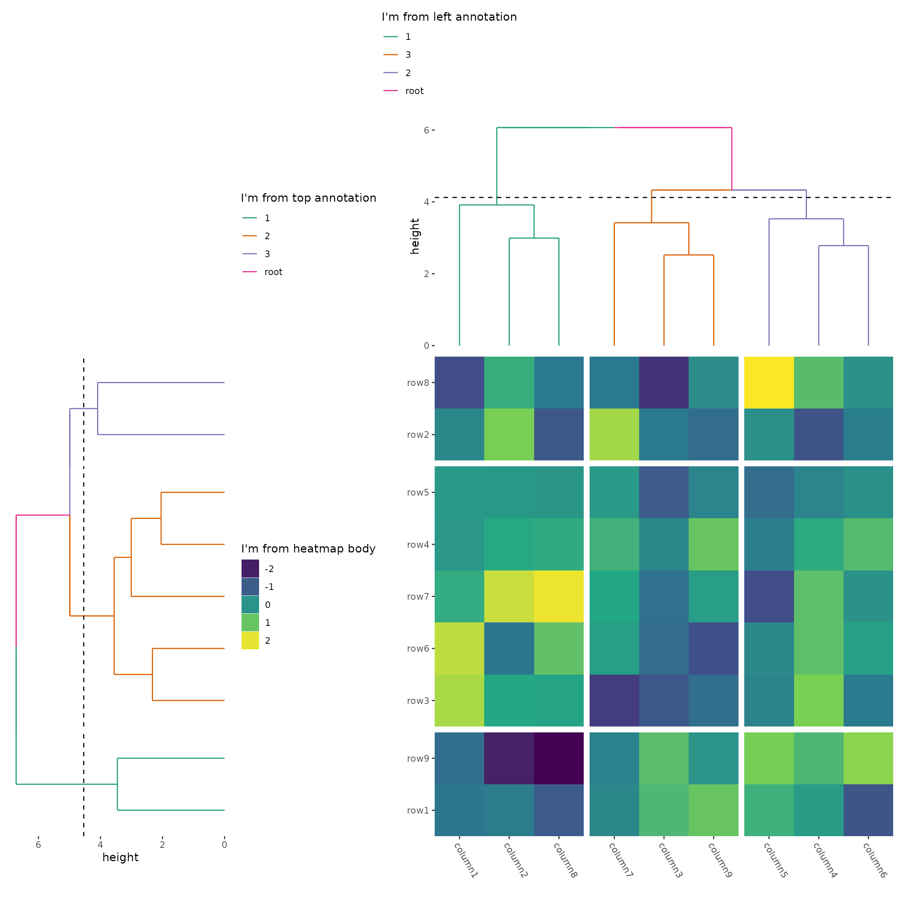
You can also apply the plot_align() function directly to
specific plots:
heatmap_collect_all_guides -
# we set global `guides` argument for the heatmap layout
# we only collect guides in the top side
with_quad(plot_align(guides = "t"), NULL) +
# `+` apply it to the active plot
# for the heatmap body, we collect guide in the left side
with_quad(plot_align(guides = "l"), NULL)
#> → heatmap built with `geom_tile()`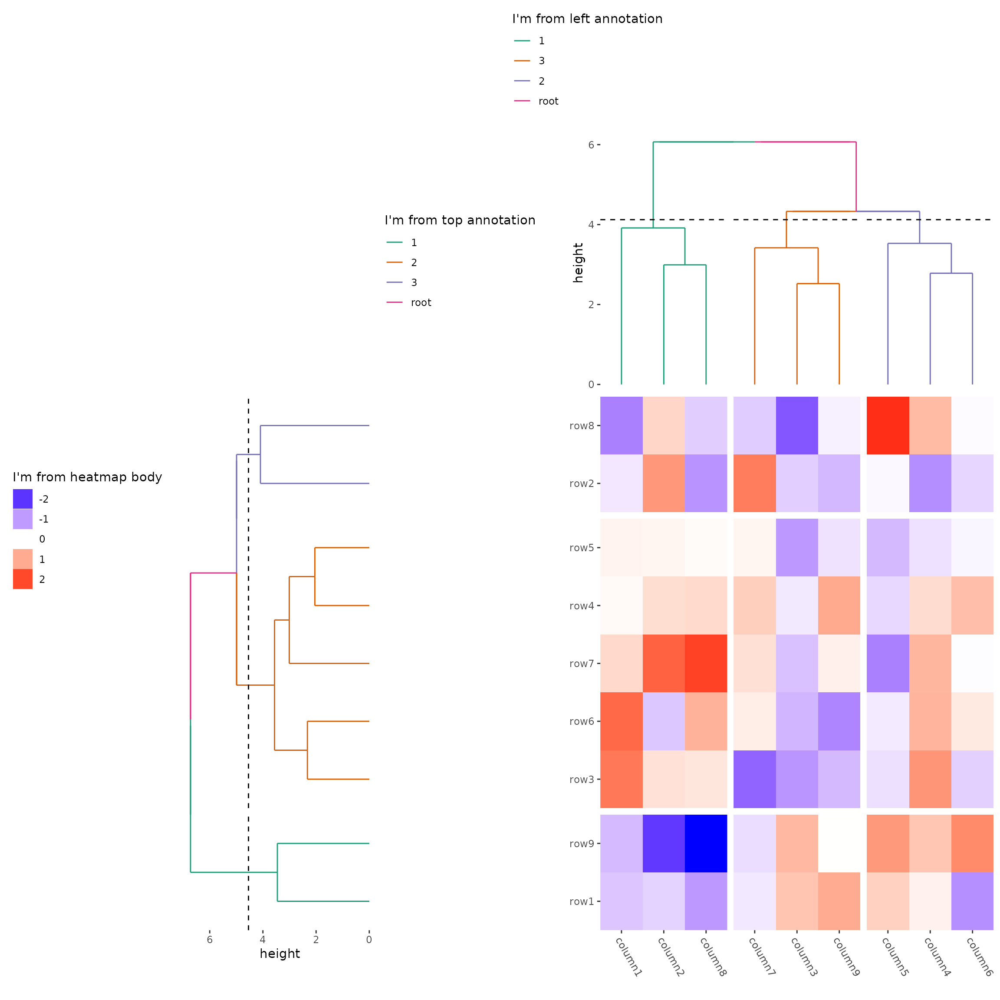
Note: The legend on the left side of the heatmap body is collected and positioned on the left side at the layout level.
If you’re annoyed by the large space between the left annotation and
the heatmap body, don’t worry! This issue can be addressed using the
free_spaces feature, which is covered in its dedicated
section.
Now, Let’s dive deeper into the guide collection process.
In the last example, we set the guides argument for the
heatmap body. But what happens when we set the guides for
the dendrogram in the top annotation?
heatmap_collect_all_guides -
# we set global `guides` argument for `the heatmap layout`
# we only collect guides in the top side in the heatmap layout
with_quad(plot_align(guides = "t"), NULL) +
# `+` apply it to the active plot
# for the dendrogram in the top annotation, we collect guide in the left side
with_quad(plot_align(guides = "l"), "t")
#> → heatmap built with `geom_tile()`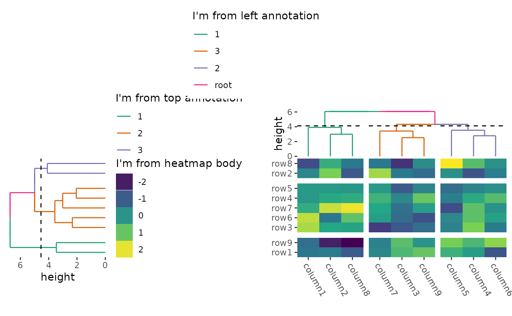
Nothing seems to have changed, right? This is because guide legends
within annotation stacks are first collected by the annotation
stack_layout() and only then passed to the top-level layout
for further integration.
By default, the annotation stack inherits the guides
arguments from the heatmap layout, followed by the inherited of
individual plot in the annotation. So guides argument set
at top-level (heatmap layout) will affect all guide collection
behaviour.
In this example:
- The legend on the left side of the dendrogram in the top annotation is collected first at the annotation level.
- Since the heatmap layout is not set to collect legends from the left side, it remains at the left side within the annotation stack.
- For this specific case, the top annotation contains only one plot, so its annotation-level placement is identical to plot-level placement.
To override this, you can use the free_guides argument
of the quad_anno()/anno_*() function. This
differs from the guides argument in
plot_align(), which controls the behavior for the plots in
the layout. The free_guides argument specifies which guide
legends from at the annotation stack layout level should be collected by
the heatmap layout.
heatmap_collect_all_guides -
# we set global `guides` argument for `the heatmap layout`
# we only collect guides in the top side in the heatmap layout
with_quad(plot_align(guides = "t"), NULL) +
# we also collect guides in the left side for the top annotation stack
# in the heatmap layout
anno_top(free_guides = "l") +
# `+` apply it to the active plot
# for the dendrogram in the top annotation, we collect guide in the left side
plot_align(guides = "l")
#> → heatmap built with `geom_tile()`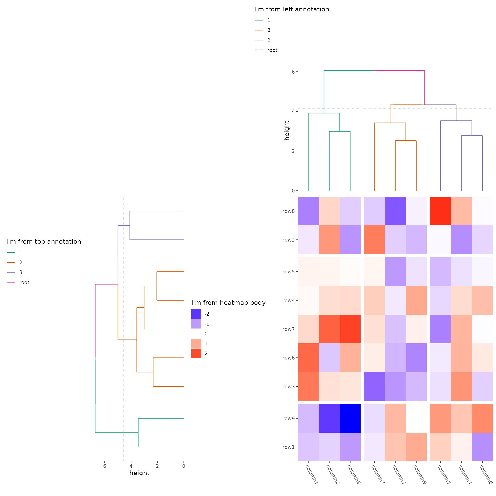
Note: The heatmap layout will only collect guide legends from the annotation stack if the stack layout collects its own guides first.
free_spaces
By default, ggheatmap() will align all elements of the
plot, which can sometimes lead to unwanted spacing. Consider the
following example:
ggheatmap(small_mat) +
# add top annotation
anno_top(size = unit(30, "mm")) +
# add a dendrogram to the top annotation
align_dendro() +
# here, we use long labels for visual example
scale_y_continuous(
expand = expansion(),
labels = ~ paste("very very long labels", .x)
) +
# add left annotation
anno_left(unit(20, "mm")) +
# add a dendrogram to the left annotation
align_dendro()
#> → heatmap built with `geom_tile()`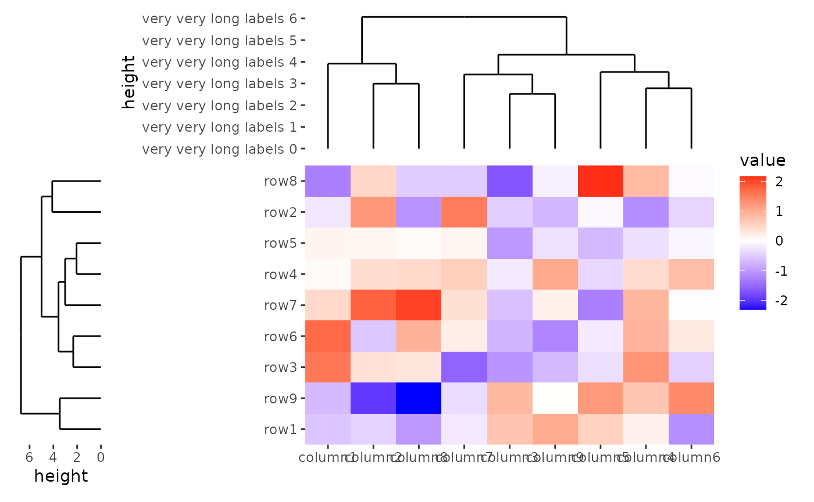
In this case, the left annotation stack is positioned far from the
heatmap body due to the wide axis labels in the top annotation stack.
This occurs because the top annotation stack is aligned with the heatmap
body. To fix this, you can remove the left borders around the panel of
the top annotation stack by setting free_spaces = "l".
ggheatmap(small_mat) +
# add top annotation
anno_top(size = unit(30, "mm")) -
# we remove the spaces of the left borders in the top annotation
plot_align(free_spaces = "l") +
# add a dendrogram to the top annotation
align_dendro() +
# here, we use long labels for visual example
scale_y_continuous(
expand = expansion(),
labels = ~ paste("very very long labels", .x)
) +
# add left annotation
anno_left(unit(20, "mm")) +
# add a dendrogram to the left annotation
align_dendro()
#> → heatmap built with `geom_tile()`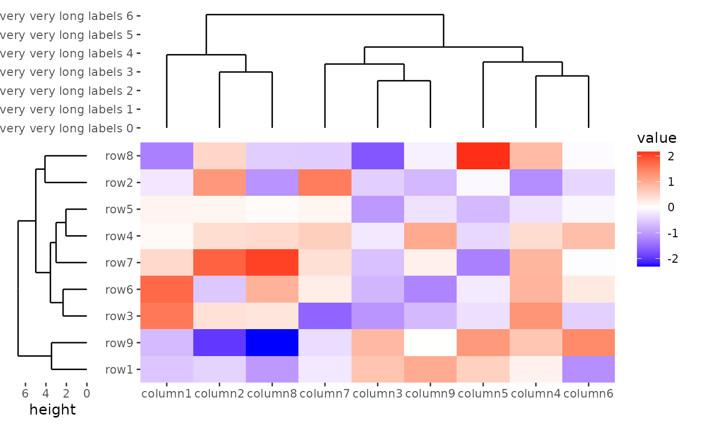
One useful way to utilize free_spaces is to position the
guide legends next to the annotations. (Note the guide legend from the
bottom annotation):
heatmap_collect_all_guides +
# reset the active context to the heatmap layout
quad_active() -
# we set global `guides` argument for the heatmap layout
# we only collect guides in the top side
plot_align(guides = "t") +
# `+` apply it to the current active plot
# for the heatmap body, we collect guide in the left side
plot_align(guides = "l") -
with_quad(plot_align(free_spaces = "l"), "t")
#> → heatmap built with `geom_tile()`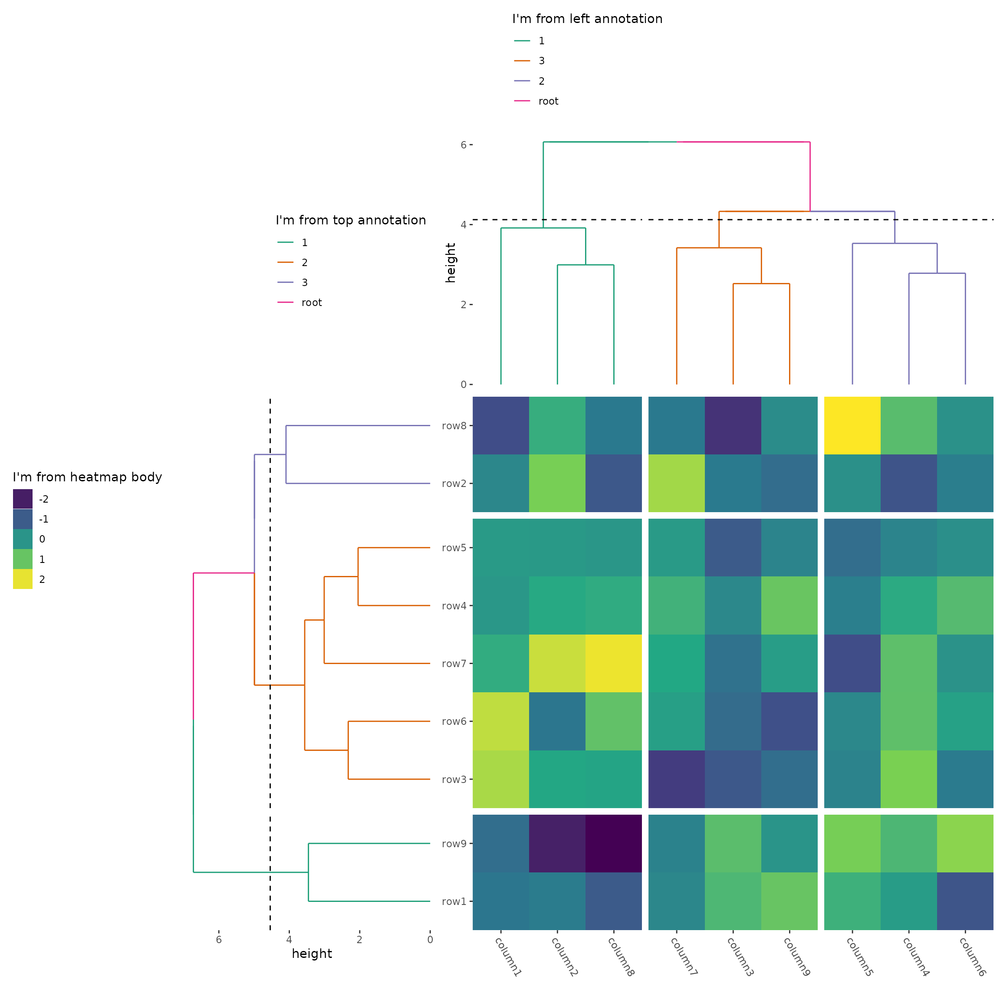
Usually you want to apply free_spaces with the whole
layout, instead of individual plots.
In ggheatmap()/quad_layout(), the behavior
of the free_spaces and free_labs arguments
differs from guides arguments in plot_align()
when inheriting from the parent layout:
- For
topandbottomannotations, it inherits from the left (“l”) and right (“r”) axes. - For
leftandrightannotations, it inherits from the top (“t”) and bottom (“b”) axes.
free_labs
By default, we won’t align the axis titles.
ggheatmap(small_mat) +
ylab("Heatmap title") +
anno_top(size = unit(30, "mm")) +
align_dendro() +
ylab("Annotation title")
#> → heatmap built with `geom_tile()`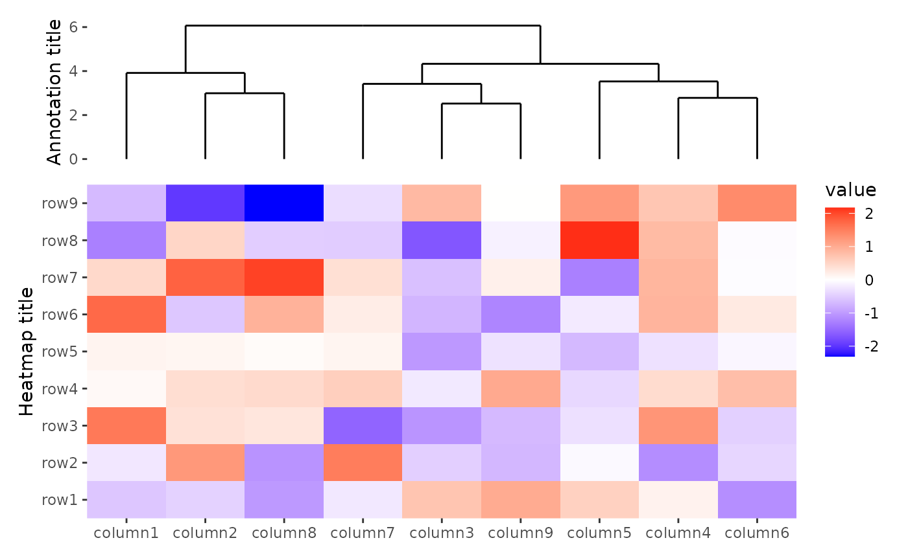
To align axis titles, you can set free_labs = NULL.
Alternatively, A single string containing one or more of axis positions
(“t”, “l”, “b”, “r”) to indicate which axis titles should be free from
alignment.
ggheatmap(small_mat) -
plot_align(free_labs = NULL) +
ylab("Heatmap title") +
anno_top(size = unit(30, "mm")) +
align_dendro() +
ylab("Annotation title")
#> → heatmap built with `geom_tile()`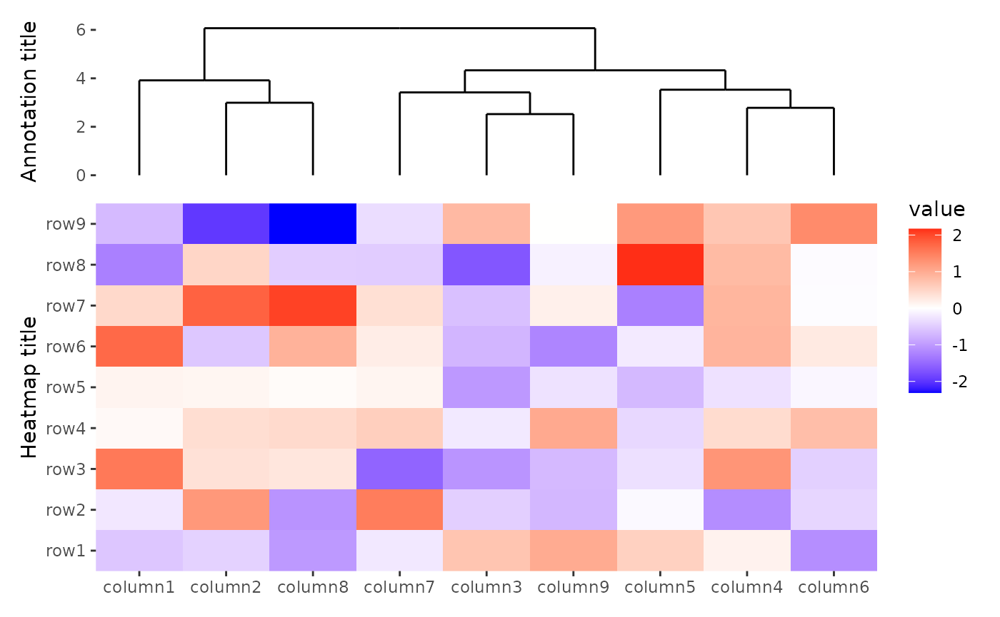
Session information
sessionInfo()
#> R version 4.4.2 (2024-10-31)
#> Platform: x86_64-pc-linux-gnu
#> Running under: Ubuntu 22.04.5 LTS
#>
#> Matrix products: default
#> BLAS: /usr/lib/x86_64-linux-gnu/openblas-pthread/libblas.so.3
#> LAPACK: /usr/lib/x86_64-linux-gnu/openblas-pthread/libopenblasp-r0.3.20.so; LAPACK version 3.10.0
#>
#> locale:
#> [1] LC_CTYPE=C.UTF-8 LC_NUMERIC=C LC_TIME=C.UTF-8
#> [4] LC_COLLATE=C.UTF-8 LC_MONETARY=C.UTF-8 LC_MESSAGES=C.UTF-8
#> [7] LC_PAPER=C.UTF-8 LC_NAME=C LC_ADDRESS=C
#> [10] LC_TELEPHONE=C LC_MEASUREMENT=C.UTF-8 LC_IDENTIFICATION=C
#>
#> time zone: UTC
#> tzcode source: system (glibc)
#>
#> attached base packages:
#> [1] stats graphics grDevices utils datasets methods base
#>
#> other attached packages:
#> [1] ggalign_0.0.5.9000 ggplot2_3.5.1
#>
#> loaded via a namespace (and not attached):
#> [1] gtable_0.3.6 jsonlite_1.8.9 dplyr_1.1.4 compiler_4.4.2
#> [5] tidyselect_1.2.1 jquerylib_0.1.4 systemfonts_1.1.0 scales_1.3.0
#> [9] textshaping_0.4.0 yaml_2.3.10 fastmap_1.2.0 R6_2.5.1
#> [13] labeling_0.4.3 generics_0.1.3 knitr_1.49 tibble_3.2.1
#> [17] desc_1.4.3 munsell_0.5.1 bslib_0.8.0 pillar_1.9.0
#> [21] RColorBrewer_1.1-3 rlang_1.1.4 utf8_1.2.4 cachem_1.1.0
#> [25] xfun_0.49 fs_1.6.5 sass_0.4.9 cli_3.6.3
#> [29] pkgdown_2.1.1 withr_3.0.2 magrittr_2.0.3 digest_0.6.37
#> [33] grid_4.4.2 lifecycle_1.0.4 vctrs_0.6.5 evaluate_1.0.1
#> [37] glue_1.8.0 farver_2.1.2 ragg_1.3.3 fansi_1.0.6
#> [41] colorspace_2.1-1 rmarkdown_2.29 tools_4.4.2 pkgconfig_2.0.3
#> [45] htmltools_0.5.8.1